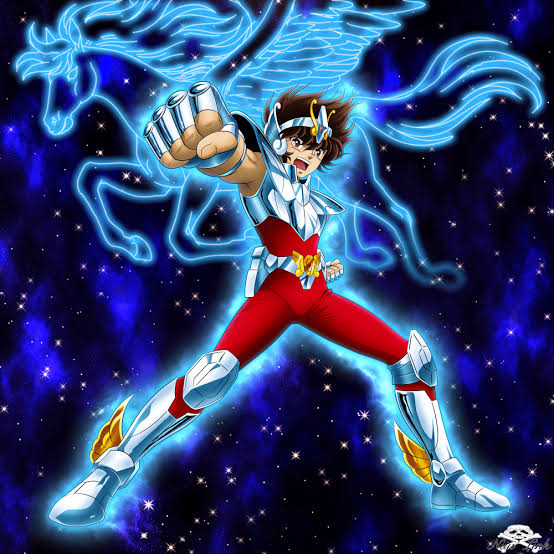
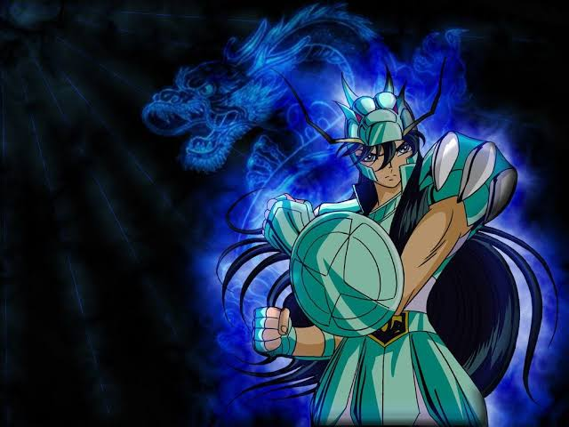
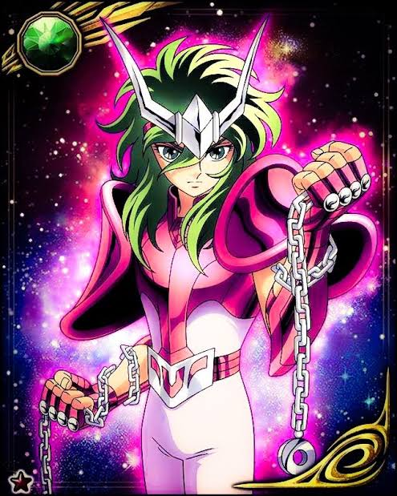
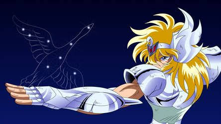
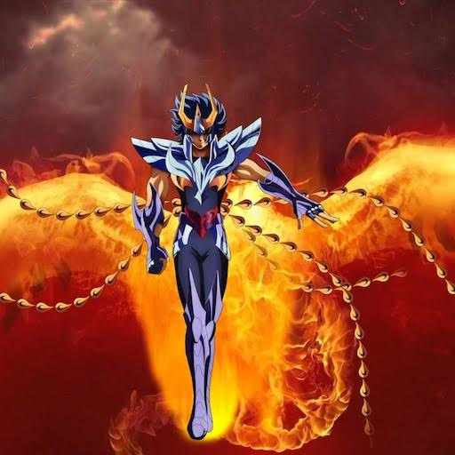
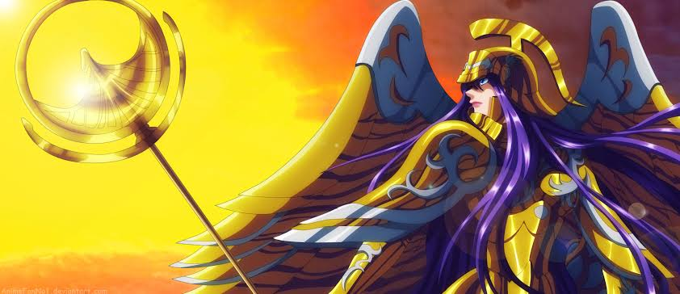
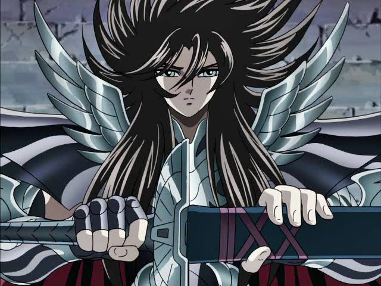

Seiya
Pégaso
Seiya é um cavaleiro impulsivo, generoso, de coração ardente e sincero. Por ser espontâneo e franco, muitas vezes é visto como atrevido e insolente, mas isso é apenas uma impressão errada. Na verdade, é um dos cavaleiros mais bondosos e justos.
Seu senso de justiça e amor aos amigos se mostra em todas as batalhas. Sua piedade se estende até aos inimigos, como visto nas mortes de Cassius e Siegfried de Doube. Domina o Meteoro de Pégaso e o Cometa de Pégaso, técnicas que concentram seu Cosmo em ataques devastadores.
Mesmo sendo o mais jovem e impetuoso do grupo, Seiya nunca hesita em arriscar a própria vida por Athena e por seus companheiros. Seu espírito indomável o faz superar limites constantemente, despertando o Sétimo Sentido em momentos críticos.
Shiryu
Dragão
Calmo, circunspecto, honrado e justo. Shiryu é o mais sábio e maduro entre os Cavaleiros de Bronze, uma espécie de líder nato que acompanha Saori Kido. Por mais sangrentas que sejam as batalhas, ele sempre prevalece.
Seu Cosmo se amplia a cada confronto, tornando-o capaz de derrotar inimigos poderosos. Não teme dar a vida por uma justa causa. Sua técnica principal é o Cólera do Dragão, e o escudo de sua armadura é quase impenetrável.
Treinou no Monte Rozan sob a tutela do Mestre Ancião. Em diversas batalhas sacrificou a visão e até a vida para proteger seus amigos, sempre ressurgindo mais forte. Representa a lealdade e a sabedoria do grupo.
Shun
Andrômeda
Shun tem uma personalidade pacífica e odeia lutar. Prefere se defender a atacar, pois não quer prejudicar ninguém. É o mais nobre entre os Cavaleiros de Bronze e possui o coração mais puro da Terra.
Sempre está pronto para morrer pelos outros, assim como sua constelação protetora, Andrômeda. Suas correntes são tanto ofensivas quanto defensivas, e podem sentir a presença do inimigo mesmo à distância.
Apesar da aparência frágil, quando desperta seu verdadeiro potencial se torna um dos cavaleiros mais poderosos. Irmão mais novo de Ikki, carrega consigo a dualidade entre a gentileza e a força necessária para proteger o que ama.
Hyoga
Cisne
Hyoga parece calmo, controlado e distante. Possui uma mente rápida e analítica, sendo o mais quieto entre os protagonistas. Abaixo da superfície, porém, é apaixonado, dedicado aos seus ideais e extremamente sensível.
Segundo Masami Kurumada, Hyoga representa mais frieza do que os outros. Seu Cosmo é baseado no gelo absoluto, capaz de atingir o zero absoluto. Suas técnicas principais incluem o Pó de Diamante e a Execução da Aurora.
Treinou na Sibéria sob o comando de Camus de Aquário. Carrega um profundo amor pela mãe e um conflito interno entre o dever de cavaleiro e seus sentimentos pessoais. Sua frieza exterior esconde um coração fervoroso.
Ikki
Fênix
Desde criança, Ikki era conhecido como o mais forte entre os cem órfãos treinados para serem Cavaleiros de Atena. Sempre protegeu seu irmão mais novo, Shun. Sua personalidade é o oposto da de Shun: dura, fria, agressiva e distante.
Assim como a lendária ave Fênix, é um lobo solitário que odeia andar em grupos. Muitas vezes permanece ausente, mas sempre aparece nas horas mais cruciais. Sua armadura se regenera e ele pode renascer das cinzas.
Treinou na Ilha da Rainha da Morte, onde absorveu o ódio como fonte de poder. Mesmo sem demonstrar abertamente, preocupa-se profundamente com seus amigos. Suas técnicas ilusórias e o Golpe Fantasma de Fênix aterrorizam os inimigos.
Athena
Deusa da Guerra
Atena preza a guerra estratégica e é calculista nas ações, nunca deixando de priorizar o bem-estar de seus cavaleiros. Faz-se presente ao lado deles nos momentos mais críticos. Seu amor pela humanidade é evidente.
Diferente de outros deuses, ela se abstém de tomar um corpo hospedeiro e se apresenta com um corpo mortal, crescendo e vivendo entre os humanos. Na era atual, reencarna como Saori Kido.
Sua missão é proteger a Terra da ambição dos outros deuses. Possui um Cosmo puro e elevado, capaz de curar e proteger. Representa a justiça, a sabedoria e a compaixão, sendo a razão pela qual os cavaleiros lutam até o fim.
Hades
Senhor do Submundo
O Senhor das Trevas concede corpos físicos para almas mortas, fazendo-as servi-lo como Espectros com a promessa de vida eterna. Seus seguidores acreditam que seu reinado traria a eternidade a todos, como nos Campos Elísios.
Aqueles com grande apego à vida caem na tentação e entram para seu exército. A reencarnação de Hades possui um corpo com vida e personalidade próprias até o despertar das estrelas maléficas.
Considerado o mais poderoso entre os deuses do Olimpo em poder destrutivo, Hades busca o domínio total sobre a Terra e a extinção da humanidade. Seus 108 Espectros e os Juízes do Inferno formam um exército temível. Representa a morte, a ambição e a escuridão absoluta.






